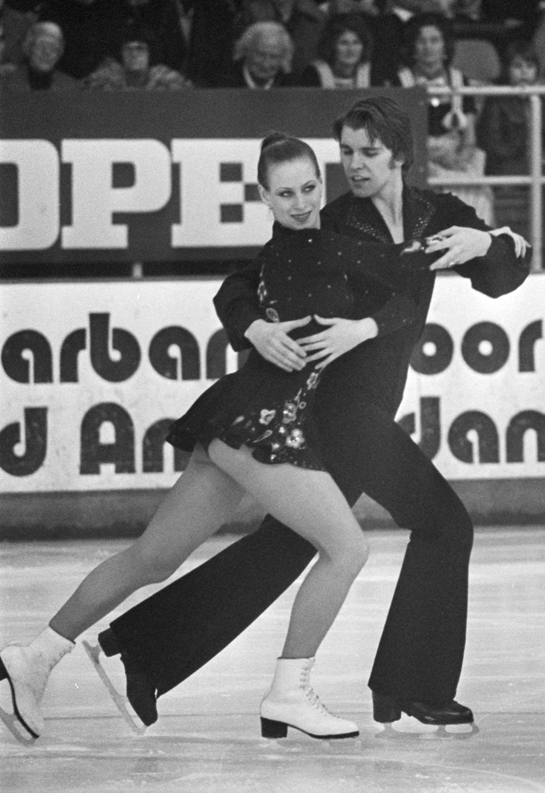

Jégtánc
A jégtánc a műkorcsolyasport egyik ága. A versenyszám először 1976-ban szerepelt a téli olimpia programjában.
A jégtánc tulajdonképpen parkett-tánc a jégen. Fő elemei az emelések és a lépéssorok. A jégtáncban a pár tagjai nem távolodhatnak el egymástól olyan mértékben és annyi időre, mint a páros műkorcsolyában, és ez utóbbival ellentétben a fej fölé emelés tilos.
A jégtáncverseny sokáig a következő programokból tevődött össze:
- Kötelező tánc: minden évben 4 tánc van megadva, az adott verseny előtt ezek közül sorsolnak egyet, amelyet be kell mutatnia minden párnak, és mindnek ugyanarra a zenére kell korcsolyáznia.
- Eredeti tánc, amely 2 perc 30 másodpercig tart, és minden évre egy, két vagy három táncot adnak meg, amelyből minimum kettőt kell felhasználniuk a pároknak a programjukban, három ritmusváltással. Tehát ha az adott évben blues, jive és foxtrott van megadva, akkor a versenyzők a háromfajta zenéből alkothatják a programjukat, vagy akár jive-blues-jive-váltással is.
- Kűr, amely 4 percig tart.

Amikor először jelent meg hivatalos olimpiai sportágként a jégtánc